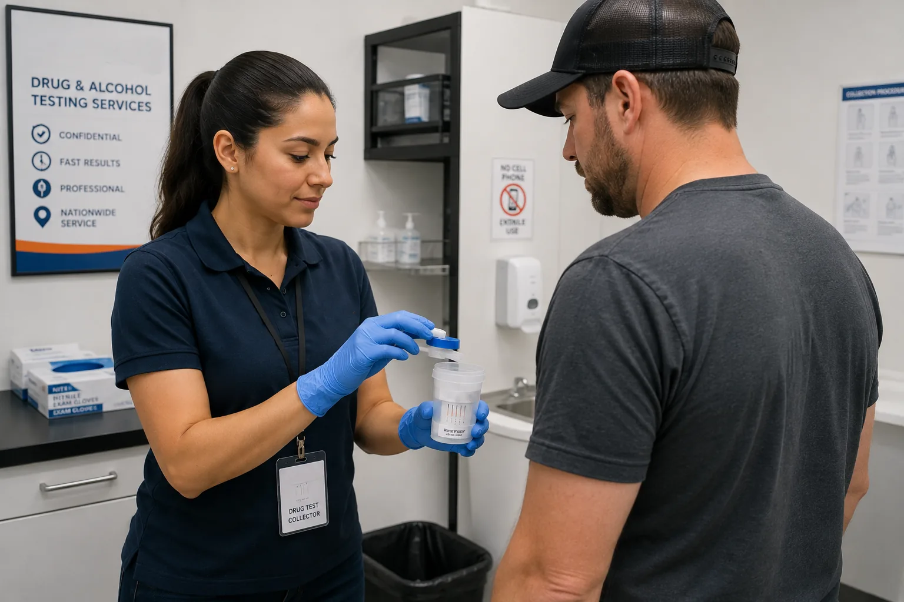

Testing methods
Urine, hair, and oral fluid tests: how to choose
A clear comparison of common specimen types and the questions to ask before purchasing a screening.
Read article →Practical articles on drug and alcohol testing, DOT compliance, specimen collection, and workplace screening—written for people who need clear next steps.
Find guidance by subject or search for a question.
Understand the practical differences between federally regulated workplace drug testing and employer-directed screening programs.
Read featured article →A clear comparison of common specimen types and the questions to ask before purchasing a screening.
Read article →
What to check before heading to a collection site, from identification to donor passes and appointment details.
Read article →
Practical steps for employers coordinating a collection following a workplace incident.
Read article →Learn what a donor pass is, when it becomes available, and where to find help before visiting a collection site.
Read article →Build a clearer testing process by defining policy, people, collection methods, and secure result handling.
Read article →No articles matched your search. Try another topic or keyword.
Our Help Center covers ordering, donor passes, appointments, and results.
For general information only. Testing requirements can vary by program, employer, and jurisdiction. Confirm applicable rules with your program administrator or a qualified professional.